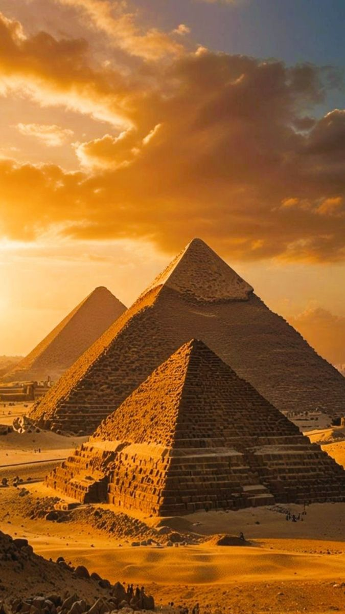
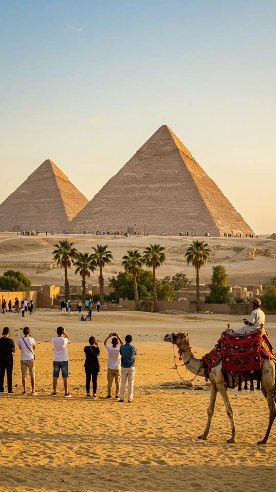
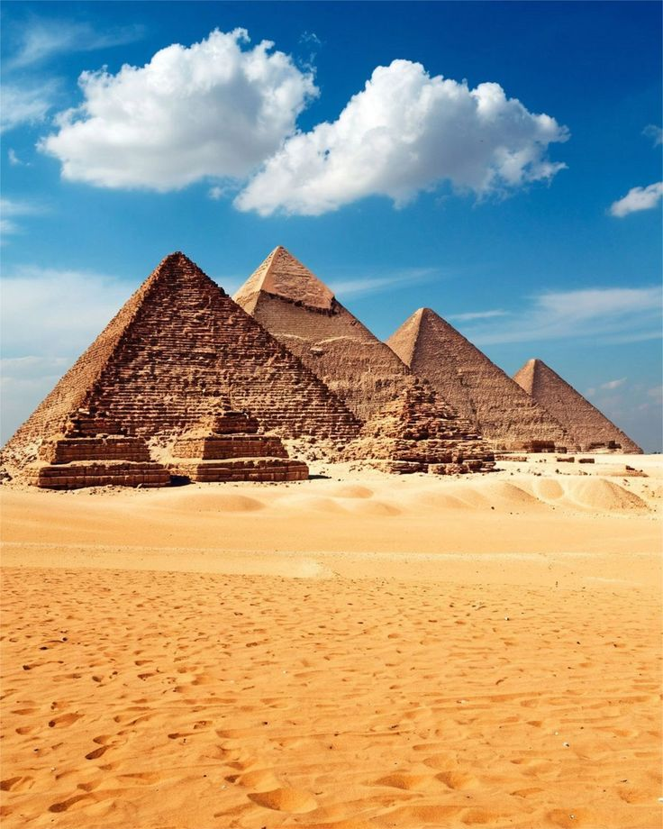

تُعتبر الأهرامات المصرية من أعظم الإنجازات المعمارية في تاريخ البشرية، وتقع في منطقة الجيزة بالقرب من القاهرة. بُنيت الأهرامات منذ أكثر من أربعة آلاف عام خلال عصر الفراعنة، وكانت تُستخدم كمقابر ملكية للفراعنة لحفظ أجسادهم وممتلكاتهم الثمينة. يُعد هرم خوفو الأكبر أشهر هذه الأهرامات، وهو الهرم الوحيد الباقي من عجائب الدنيا السبع القديمة، كما ظل لقرون طويلة أطول بناء صنعه الإنسان في العالم. تميزت الأهرامات بدقة هندسية مذهلة، حيث تم بناء ملايين الأحجار الضخمة بطريقة منظمة تعكس براعة المصريين القدماء في الهندسة والفلك والرياضيات. تضم منطقة الأهرامات أيضًا تمثال أبو الهول الشهير، الذي يُعد رمزًا للقوة والغموض، ويجذب ملايين الزوار والسياح من مختلف أنحاء العالم سنويًا. تمثل الأهرامات المصرية حضارة عظيمة تركت أثرًا خالدًا في التاريخ الإنساني، ولا تزال حتى اليوم مصدرًا للإعجاب والدراسة بسبب أسرارها وطريقة بنائها المدهشة.